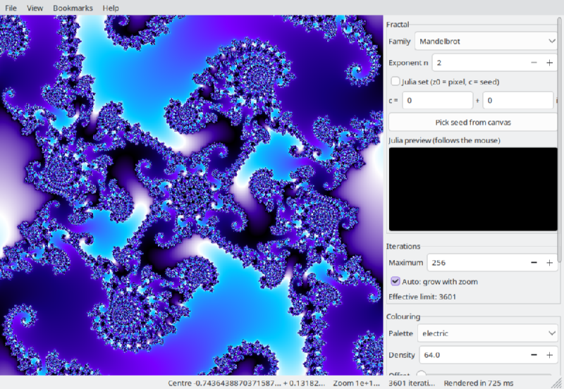
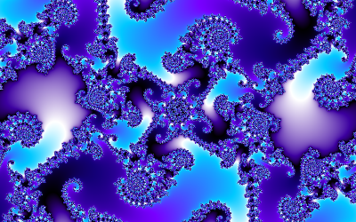

Deep zoom

Ordinary double-precision numbers stop telling neighbouring pixels apart at a zoom of roughly
1e13. Mandelbrotter goes to 1e300 by changing how it computes:
- The centre of the view is kept as a big number with as many binary digits as the zoom needs
(plus some to spare), so it never loses its place however deep you go.
- Above a zoom of 1e8 the status bar adds "(deep)": the centre's own orbit is computed
once at full precision (the reference orbit), and every pixel is then iterated as a small difference
from it, which fits into ordinary doubles again. This is called perturbation; when a pixel's difference
drifts away from the reference it is re-based, which keeps the picture free of the glitches that
plain perturbation shows.
- Long stretches where a pixel's difference stays tiny are skipped in one step (bilinear
approximation), so deep frames take a fraction of the time of iterating them step by step.
All of this is automatic and works for every family and in Julia mode. What you will notice:
- A short pause before the first coarse pass of a deep view, while the reference orbit is computed.
- Coordinates in the status bar show sixteen decimals at most and then "...". The full value is
kept, and view files and bookmarks store it
with every digit the zoom needs, so a saved view reloads exactly.
- The iteration limit rises steeply with the zoom when Auto is on (see
Iterations); deep views need it.
- The Julia seed stays a double-precision number.

Try it:
a spiral in Seahorse Valley at zoom 1e12, and
Try it: dive there from the whole set
Contents